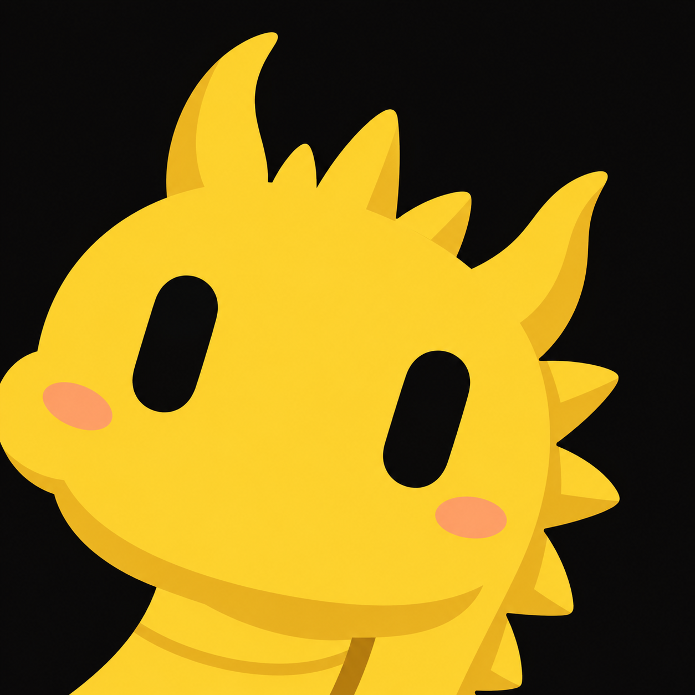

CODEX · INTEGRATION PREVIEW
原位接入，继续验证
完整播放器与源码已完成，和 DSH 共用 66 套动作与行为逻辑。目标是原来的宠物位置；CLI 内核不变，不增加窗口。
macOS 受认可签名条件尚未满足，临时本地签名无法通过系统库验证。自动安装在修改应用前停止；不会关闭安全保护，也不以精简版替代。
查看当前限制
源码接入按 Codex 26.1013.40934（20770）核验，真实原位运行尚未完成验证。完整备份与自动测试不能替代应用签名条件。

抱抱龙 · Pixel Agent PetsSMALL PIXELS. BIG PERSONALITIES.
01 / THE LITTLE THEATER
高清原片与桌面像素版。
清晰度、显示大小，分别调到喜欢。
高清原片按需加载；只调大小不会降低清晰度。
02 / BRING THEM HOME
DSH 已就绪。
Codex 原位接入，继续验证签名。
DSH 已核验于官方 0.1.0-rc.6 web；实际官方 CLI 的隔离安装与 doctor 检查通过。检查与卸载使用同一入口，分别追加 doctor --dsh 或 uninstall --dsh。Codex 原位一键安装目标尚未完成。
只把图集添加到官方宠物列表，由官方固定 9 种状态播放，不包含完整动作逻辑和剧情字幕。这是独立可选素材，不代表 Codex 原位完整播放器已经可安装。
兼容图集导入后按 ⌘, → Mini 与虚拟宠物 → 圆形刷新箭头 → 选中角色。
TINY, ON PURPOSE.
固定脚底线，原帧顺序播放。完整动作带到桌面，表情和张力都留下来。
不调用模型，不改 CLI 内核。字幕只是本地的小演出，不会写进提示词。
有限图片缓存，静止时不重绘。隐藏时停表，也尊重系统的减少动态效果。